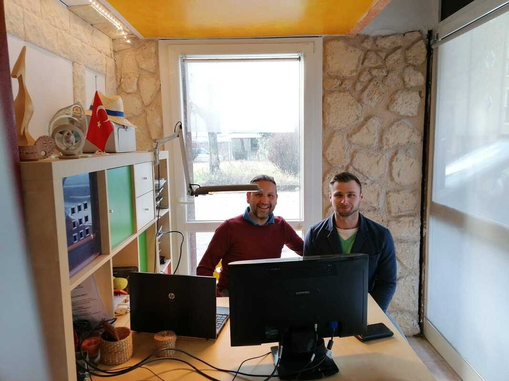
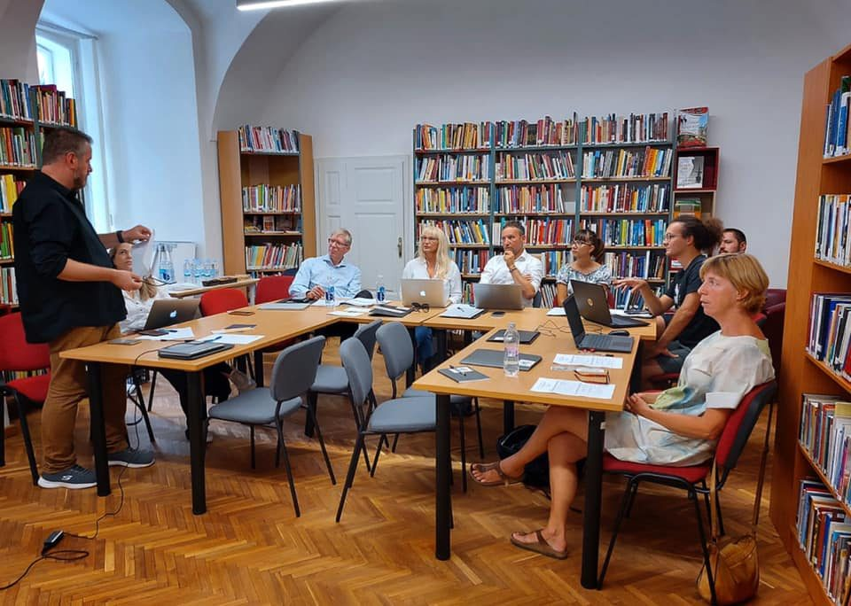
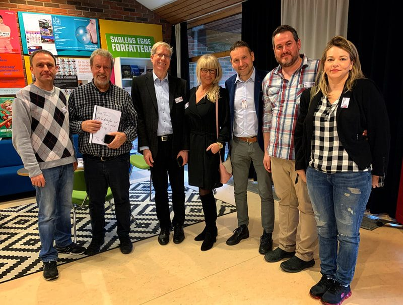
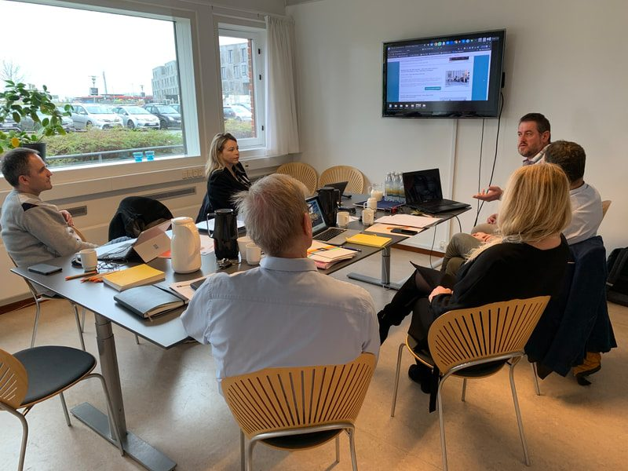
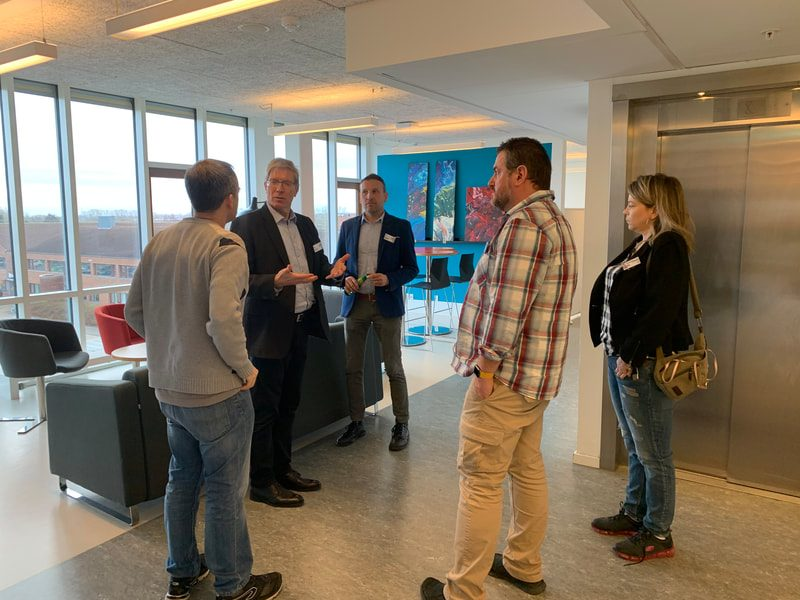
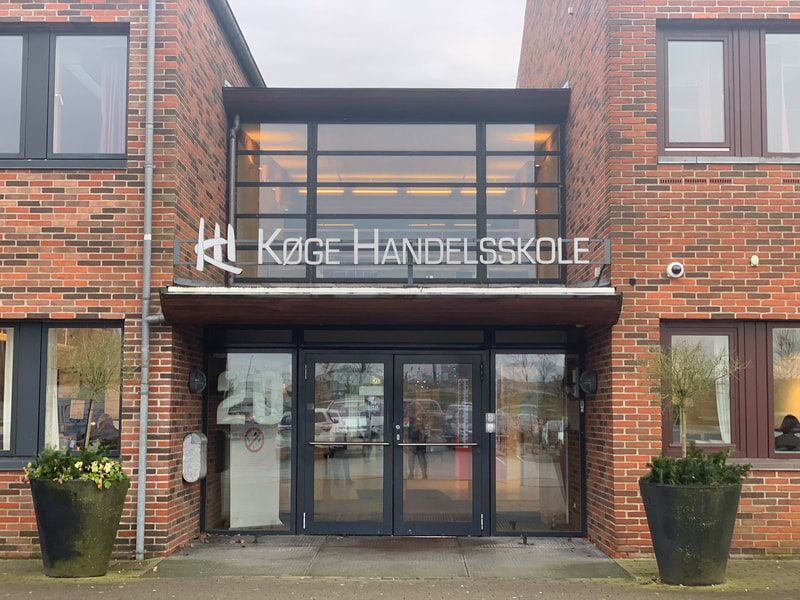

Teaching and inclusion
Teaching support, social inclusion and conflict management courses: practical tools for the classroom and for the working group.
Nefeli Education brings together a language school accredited as an exam centre and a training centre for teachers, school staff and students worldwide. One single methodological framework, from the first lesson to the certificate.

On one side, language teaching, with certifications recognised in Italy and abroad. On the other, training for those who teach: teachers, ATA staff, school leaders and students. Both vocations share the same method and the same platform.
English and Italian as a second language, with pathways built on the real exam format and a platform that corrects, measures and reports progress.
Pathways for schools, universities and organisations: from innovative teaching to workplace safety, from artificial intelligence to team building. Tailor-made, delivered in person or online.
Teaching support, social inclusion and conflict management courses: practical tools for the classroom and for the working group.
Experiential pathways for class councils, departments and staff: building trust, reading conflicts, deciding together.
AI applied to processes, prompt engineering, data analysis, cybersecurity and data protection, digital marketing and e-commerce.
Occupational health and safety (Legislative Decree 81/2008), fire safety, first aid, HACCP, GDPR and sector regulations.
Equipment licences, welding, maintenance and industrial automation, personnel administration and payroll.
Sustainability and ESG criteria, lean organisation, leadership, change management, communication and inclusion (DEI).
Integrated digital teaching, innovative methodologies (flipped classroom, cooperative learning), school inclusion and IEPs, STEM subjects and guidance, qualification pathways and education for respect.
Specific training pathways for ATA staff, including updates for pay-grade positions and the operational management of school services.
Digital literacy, AI and robotics, coding and web development, civic education and sustainability, university and career guidance. Pathways designed with schools to be recognised as PCTO and documented on completion.

The Language Academy (ADL) is Nefeli's digital arm: six specialised portals, exam simulations, automatic correction and reasoned error analysis. Teachers and students log in from the same address, with different pathways.
Every answer is assessed on the spot, with the rule to review indicated.
The teacher sees how the class is doing and steps in where needed, not afterwards.
Same structure, same timing, same assessment criteria as the certification body.
The same framework applies to a language certification and to a teacher training pathway: start from a measurement, work on a programme, verify, document.
Entry test or analysis of the institute's needs: the real starting point is established.
Modules built around the objective, not a generic syllabus. Materials shared with the client.
In person, online or blended. Every unit has explanation, practice and assessment.
Certificates, progress reports and, for languages, the official body's certification.
We design the pathway together: needs analysis, training proposal, schedule and quote. We reply within two working days.
In recent years we have built collaborative relationships with universities and institutes in Europe, Asia and North America, and we act as a host organisation in European programmes.
The images tell the story of daily work: classroom lessons, seminars with teachers, project meetings and visits to partner schools in Europe and around the world.






No. The entry test is precisely there to understand where you are starting from: you can begin from zero and the pathway will offer you the modules suited to your level, moving you up gradually.
No, and this matters: Nefeli prepares you for the exam, but the certification is issued by the official body (Trinity College London, ETS for TOEFL and TOEIC, the certifying body for Italian L2). We are an authorised exam centre: you can take the test here, in the same place where you prepared.
Every pathway is designed with the commissioning institute and documented with a certificate of attendance and, where provided, with the certification or update required by the applicable regulations. For student pathways, a PCTO agreement can be activated.
From the catalogue, choose the course, press “Enrol” and complete the enrolment request. The office confirms availability and sends payment instructions (bank transfer or card). Platform access is activated once payment is confirmed.
From a computer, tablet or smartphone. All you need is an internet connection: your progress is saved and you can pick up where you left off from any device.